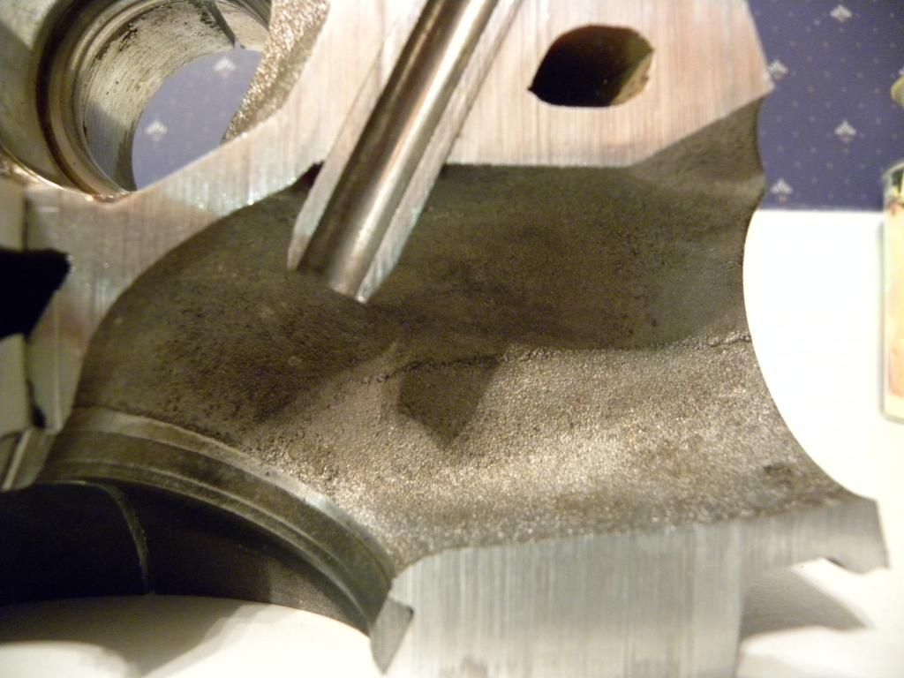
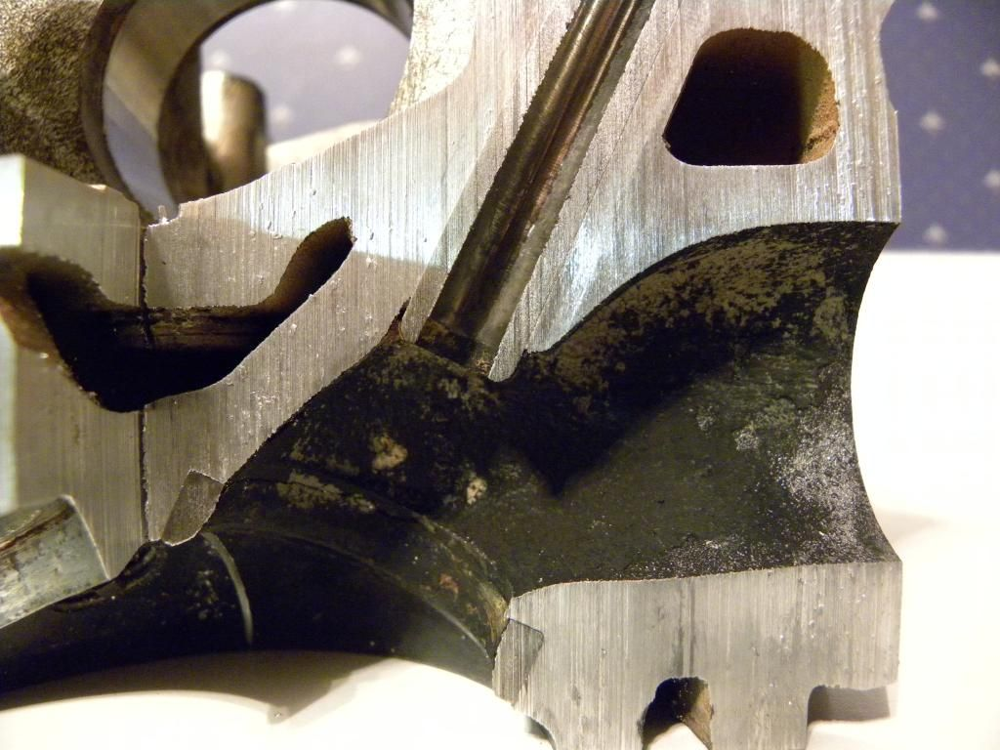

-
Quite interesting, as a22770 dudes flow tests as well as Jasons on redz31 show huge gains everywhere when ported and unshrouded.youngfg;n770274 wrote: I now have access to a SF600 flow bench so I will be flowing several different heads.
I will start flowing every .050, and stop at .450, no use in going any higher, there really aren't any cams with that high lift to worry much over .450.
We did a back cut on a set of stock valves and re-flowed both heads, the difference was negligible.
I also flowed both heads with some minor porting, cleaned up the SSR, unshrouding, ect., they only picked up flow above .400" lift, so it really wouldn't help much in the real world.
I working now on testing with the +1mm Ferra valves. We have to get the right tooling to open up the throat, and do a good valve job. They normally work with engines that have 2.5" valves so they don't have any small tooling.
I also plan on testing with a 30deg. seat angle. The 30deg. seat is supposed to help with low lift flow, and with these engines that's all we have.
Also, what were the actual lifts you tested the above VG heads at? Is the 1-6 just the test number or the actual lift?
I'd flow atleast to .5" as some VG cams do have *almost* .500" lift.- VG30DET (HE341) 86 300ZX - 1982 280ZX Turbo - Headered NA 1986 300ZX 2+2 - 2000 Xterra - -
If you can and are feeling generous, can you flow at 10" as well? I want to see if there's any big differences at low air speeds between the heads as well.BLOZ UP.com
It is not recommended to confirm proper installation by driving into walls or other barriers as this could cause personal injury or damage to the vehicle. -
bernoulli's principleBLOZ UP;n770289 wrote: If you can and are feeling generous, can you flow at 10" as well? I want to see if there's any big differences at low air speeds between the heads as well. -
Or if you are feeling very adventurous, flow test at 48" of h2o and see if it will correlate with what it flowed at 28". Hint, it wont unless you fix the velocity profile in the port. -
Yes, but with high air speeds air can just "give up" going around the SSR, resulting a different trend of gains. At low air speed, you can find that some porting work that seemed to give little benefit at high air speed really benefits at low speeds.Originally posted by 88sinZBLOZ UP.com
It is not recommended to confirm proper installation by driving into walls or other barriers as this could cause personal injury or damage to the vehicle. -
This is a V52 head from an early '87 model (11/86). MAY or MAY NOT have been the original engine. The cylinder in particular is #5
Maybe we can compile these pics into a sticky head thread.


MAJOR difference in the intake port. No so much the exhaustZ31 owner since 1997. -
Holy exhaust restriction.vg30'd s13 in progress. Shocks. Pegs. Lucky. -
ITT: minds being blown by 20yrs of machining progress
-
Originally posted by BLOZ UP
any material to elaborate on this? Just curious -
According to Vizard: "Air is heavy". At different velocities the air mass behaves a lot differently. An engine doesn't pump air in the same way that a flow bench does, there's a pulsing to it. Whenever the valve is closed air slows to a stop, then it speeds back up again when it opens. At peak velocity, most of the air entering the chamber is going through the end opposite of the SSR. At low speeds and lift, air is more uniformly going around the valve into the chamber.
So, testing on a flow bench at a low speed and a high speed will better indicate how your port work benefits on a running engine.BLOZ UP.com
It is not recommended to confirm proper installation by driving into walls or other barriers as this could cause personal injury or damage to the vehicle.

Copyright © 2006–. All rights reserved. Privacy Policy